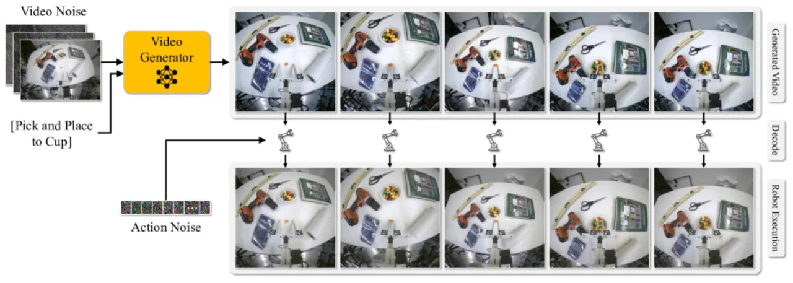
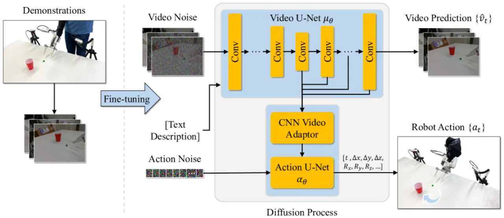
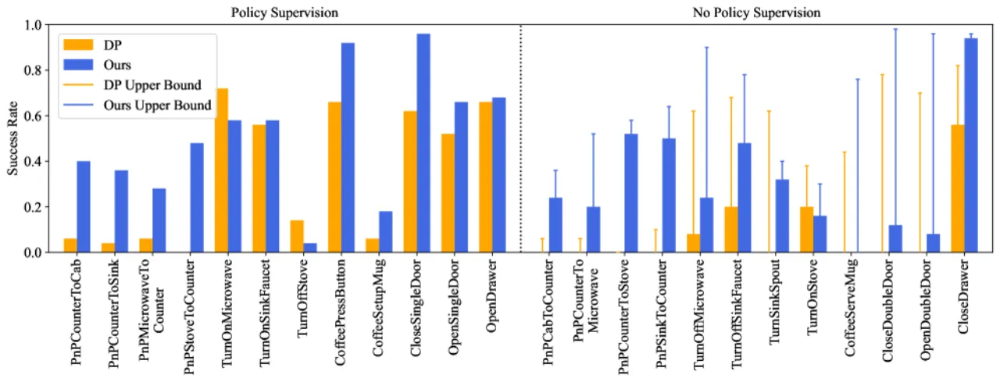
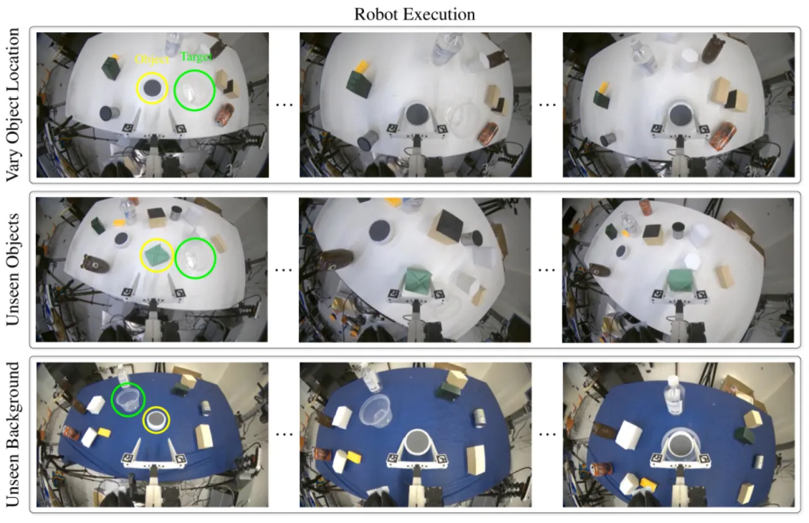

Video Policy 提出一个模块化框架，将视频生成与动作生成联合训练——通过学习"生成机器人执行任务的视频"作为代理目标，用极少的演示数据即可习得高度泛化的操作策略，在仿真与真实环境中均显著超越传统 behavior cloning 方法。
当前 visuomotor policy 面临两大核心挑战：（1）在感知或行为分布偏移下泛化能力差；（2）性能高度依赖大规模人类演示数据集。这两点制约了机器人策略在真实场景中的可扩展性与鲁棒性。
"Despite tremendous progress in dexterous manipulation, current visuomotor policies remain fundamentally limited by two challenges: they struggle to generalize under perceptual or behavioral distribution shifts, and their performance is constrained by the size of human demonstration data."
作者的核心观察是：视频生成是比动作生成更通用的目标。学会预测机器人执行任务的视频，可以从无动作标注的视频数据中学习环境动力学，进而以极少有动作标注的演示数据完成策略提取。这一思路将互联网规模的视频生成预训练引入机器人学习，提供近乎无限的动作无关数据来源。

Video Policy 由两个模块化扩散网络组成：Video U-Net（μθ）负责生成未来帧序列，Action U-Net（αθ）以视频特征为条件解码机器人动作。两者联合训练，视频生成网络的中间特征直接为动作预测提供丰富的时空表征。

基于 Stable Video Diffusion (SVD) 构建，通过 cross-attention 接受两类条件输入：（1）自然语言任务描述的 CLIP embedding；（2）连结并经 VAE 编码的初始观测图像。在机器人演示数据上 fine-tune 后，模型学会生成符合任务语义的执行视频序列，并在此过程中隐式编码环境动力学。
1D CNN U-Net，从视频解码器五个等间距层抽取时空特征，经 CNN adapter 后输入动作 U-Net，对动作噪声进行去噪以预测连续控制量。训练时对视频网络采用梯度截断（gradient stopping），防止动作损失反向传播影响视频模型，保持视频生成质量。
Stage 1：在全量视频数据（含无动作标注视频）上 fine-tune 视频扩散模型，学习丰富的环境动力学表征。Stage 2：冻结视频网络权重，仅训练动作解码头，从少量有标注演示中提取策略。消融实验（Table 3）证明此两阶段策略相比联合训练（joint）提升 success rate 从 0.57 → 0.63，而完全跳过视频 fine-tuning 则性能崩溃至 0.09。
在 RoboCasa（24 个任务，涵盖 Pick&Place、Doors、Drawers、Knobs、Buttons 等多类别）与 Libero10 两个 benchmark 上评测；真实环境测试 5 项操作任务，评估对物体位置、外观与背景的泛化能力。主要 baseline 包括 DP-ResNet、DP-CLIP、GR00T、DP-VLA、UVA 等。
| 方法 | 3DA | DP3 | DP-ResNet | GR00T | FPV | DP-VLA | UVA | Ours (50) | Ours (300) |
|---|---|---|---|---|---|---|---|---|---|
| Avg. Success Rate | 0.06 | 0.23 | 0.41 | 0.50 | 0.51 | 0.57 | 0.50 | 0.63 | 0.66 |
使用 50 个演示的 Video Policy 即超越了所有使用更多数据的 baseline；300 个演示版本进一步达到 0.66，高于最强 baseline DP-VLA（0.57）约 16%。
| 方法 | DP-C | DP-T | OpenVLA | UniPi | π₀ | π₀-FAST | UVA | Ours |
|---|---|---|---|---|---|---|---|---|
| Avg. Success Rate | 0.53 | 0.58 | 0.54 | 0.00 | 0.85 | 0.60 | 0.90 | 0.94 |
| 变体 | Avg. Success Rate |
|---|---|
| No Video Tuning | 0.09 |
| Joint（联合训练） | 0.57 |
| 2-Stage（本文方法） | 0.63 |
作者指出："learning to generate policy-execution videos is both necessary and sufficient"——无视频 fine-tuning 时成功率仅 0.09，说明视频生成目标是提取有效策略的核心。

| 任务 | 物体位置变化 | 未见物体外观 | 未见背景颜色 |
|---|---|---|---|
| Open Drawer | 0.8 | 1.0 | 0.9 |
| Pick and Place | 1.0 | 0.9 | 0.8 |
| M&Ms to Cup | 0.8 | 0.9 | 0.2 |
| Upright Object | 0.3 | 0.7 | 0.8 |
| Stack Cups | 0.3 | 0.2 | 0.2 |

"Our study has several limitations. First, it is restricted in the scale of simulation benchmarks and a single real-world embodiment." 当前验证仅覆盖 RoboCasa 和 Libero10 两个仿真 benchmark 以及一种真实机器人平台，结论能否推广到更广泛的任务场景仍有待验证。
"Additionally, we explore only one instantiation of video generation models — Stable Video Diffusion (SVD). While our analysis is more extensive than prior works, broader validation across tasks, environments, and model families would further strengthen the findings." 不同视频生成模型架构（如 DiT-based 模型）是否同样有效尚未验证。
"The computational cost of video diffusion models remains a major practical bottleneck, particularly for real-world deployment." 当前实现在 256×256 分辨率下生成 25 帧约需 9 秒，远无法满足实时控制需求。作者指出扩散推理加速方向（如 consistency distillation）有望缓解此问题，但尚未集成。